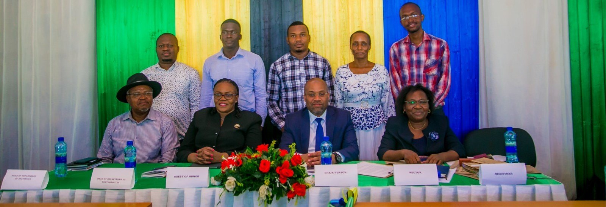
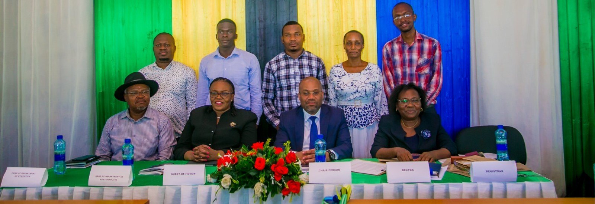
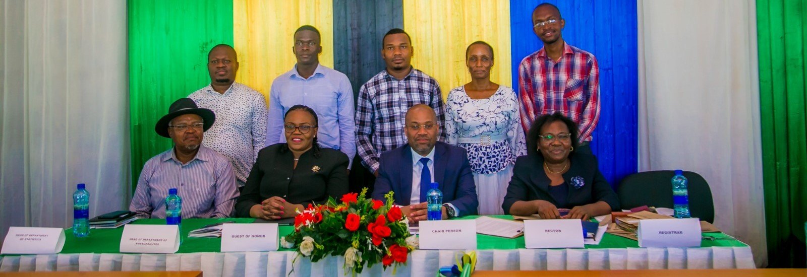
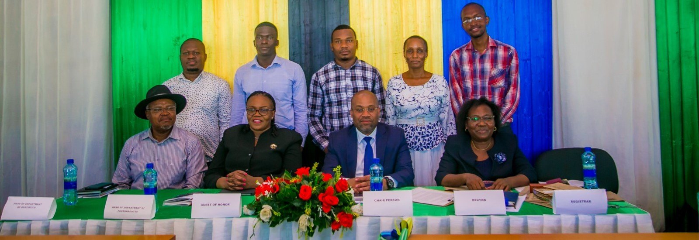
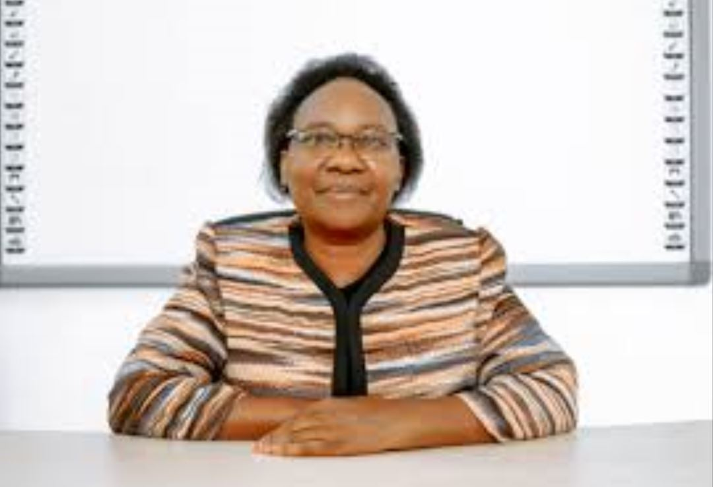

The Eastern Africa Statistical Training Center has pleased to announce for all students,teachers and other workers to the great convocation
ceremony.The convocation will be
DATE :15|11|2024
VERNUE:FUNCTION HALL
DAY:FRIDAY
.Also the convocation topic wiil be"The role
of officcial statistics and big data in the economic transfomation and susteinable development of Tanzania"
and will exaplain a lot
concerning our main theme whiich atte that "Modernizing data ecosystem to accelerate the implementation of Arican Continentioal Free Trade
(AfCFTA):The role of official statistics and big data in the economic transfomation and sustainable development of Africa
which will be presented by Dr Joyce Minja and other experties.And the guest of honour
will beProf.Fortunata Songera Makene,Execative Director-ESRF
We also uniforming that the Presedent of convocation will be:

In Convocation we declared to award prizes for all deserving parties such as:
Rector Prizes-An award to the student with highest GPA for graduants of Masters,Degrees and Ordinary Diploma
Academic Stuff's Prizes-An award to the students with outstanding perfomance
Certificate of Merit to Eastc-So leaders-An award to the leadership of the students Organization for the tireless efforts and it will be Certificate to all leader
.
Honestly the institution is expecting to have a huge cooperation from students as we can gain somesort of knowledge
from diffent
people.So welcome all so that we can celebrate together with our graduates